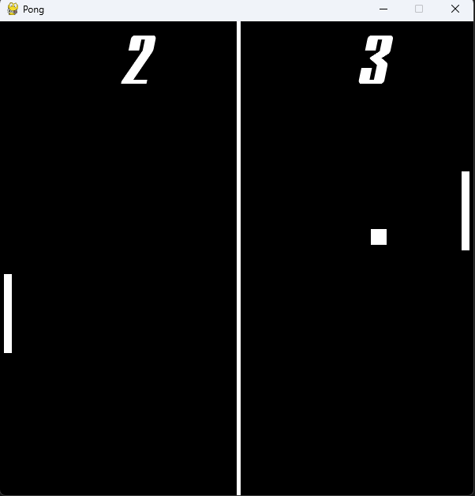
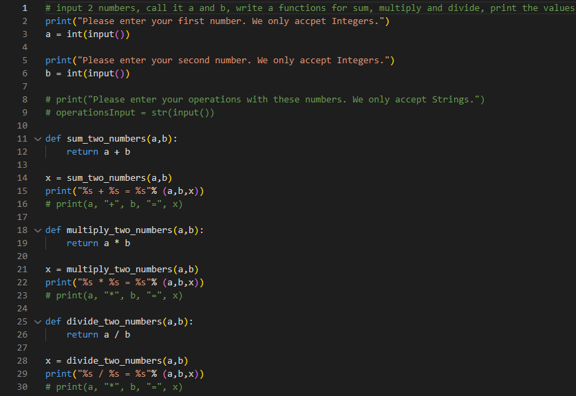

List of Good Projects I have done:
Click here to view the link at the bottom of the webpage
This is a rock paper scissors program that I have made in Python, this is very basic as I have made this in Year 10 and at the time, I only used the terminal output before learning Tkinter, Pygame and other modules in Python. So far it is made where the player is played against the computer who takes advantage of the random module with random.choice() function based on the items that in the array. Although this isn't made with Tkinter, it is more enjoyable to use whenever you want to test some data or have some fun with the computer.

This is my first 2D game that I have made in Python with the module Pygame. This is a refinement of the original pong game which was the first interactive game for users, traces way back in the 70s. This is the first time I have used Object-Oriented Programming in Pygame despite Python not being an Object Oriented Programming Language and not really ideal for creating games. Overall this was an enjoying experience (I have created this in April 2023 in Easter in Year 12). The challenging part of this was to use differentiation to calculate and determine the collision between the paddle and the ball.


These 2 are different images but represent the same logic and principle that is required here for the understanding of this program. This is taken from the original DVD Screensaver logo that was often used in DVD films when the user is inactive for a few mintues on a video sharing program or on a DVD player. This was also used in Older Versions of Windows Operating Systems such as Windows XP, Windows Vista and Windows 7. I made 2 similar versions to allow me to understand the logic principles of this. The one with the images is focuses more on Object Oriented Programming whereas the one with the square is more procedural. An Extra Bonus point is the number of edge and corner hits created although there are at least 1/1000000000000 chance of an image landing in a corner which is very slim but satisfying!

This is a Love Tester GUI that I have made with the Tkinter module in Python, I am still learning this as I am not very good at this and plan to improve on this. This is quite hilarious if you want to program it in your own way and being able to have some fun with anyone. Although I am still learning Tkinter, this was a good experience to make on my own with some help but this was from an enjoyable website game that I played when I was younger. Don't worry, it is family friendly and very appropiate, this is just for fun with other people.

The Aim Trainer Program is another program that I have created with Pygame, this was used for anyone to improve their own training and to calculate how fast they are hitting the target. An improvement on this would be to calculate the average time per target as this includes the reaction time before clicking the target. Similar to the Stopping Distance in Driving.



These 3 are different versions on how I created a calculator, this was something that I have created in Year 10. However, this was created with the terminal output in the chosen editor I use to write code (Visual Studio Code). I didn't make this with Tkinter as I haven't learnt it then.
Then there is this, 2 different adaptations of the Rubik's Cube Timer, I have created this since I have a passion for speedcubing, I used it to create a timer since I have used Rubik's Cube Timers to be able to time my solves. Also learnt the concept of starting and stopping Timers. Both versions are created in Python. The first draft was created in August 2024 and the Improved Version was created from January 2025 (1st Year of University)
The Dinosoar Game was created as a procedural version, didn't use images but shape form to understand the concepts of side scrolling and jumping. Side Scrolling was difficult and had help with that
This was a basic small project created with the functionality with Javascript and using HTMl and CSS for the Design of the interface
The clock Display is created using HTML, CSS and Javascript, this is beneficila for showing the clock in real time and using functionalty such as displying the clock and timer and CSS for creating the 7-segment display and adding functionality with Javascript (both with help).
But most importantly, there is this web application of a Personal Portfolio page that I have created and continuing on to develop. And you're looking at it.
There will be upcoming good programs displayed here.